Młodzieżowy samorządowiec z Redy
Kajetan
Piotrowski
Wiedza. Chęci. Doświadczenie.
Działalność w Młodzieżowej Radzie Miejskiej w Redzie, Samorządzie Uczniowskim Szkoły Podstawowej nr 3 w Redzie oraz przy projektach społecznych, medialnych i sportowych.
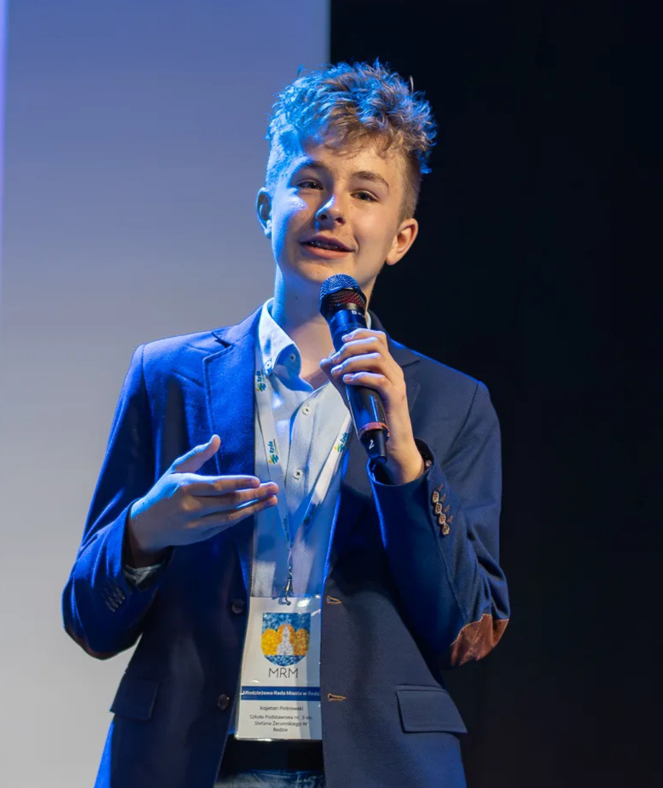
O Mnie
Samorząd, media, sport i działalność społeczna.
Jestem młodzieżowym Radnym Miasta Reda oraz przewodniczącym Samorządu Uczniowskiego Szkoły Podstawowej nr 3 w Redzie.
Działalność obejmuje organizację wydarzeń, inicjatywy dla młodzieży, rozmowy dotyczące miejskich inwestycji, media oraz aktywność społeczną. Ważnym elementem jest łączenie pomysłów młodych mieszkańców z konkretnymi działaniami.
Działalność społeczna
Samorząd
Media
Organizacja wydarzeń
Mediator rówieśniczy
OSIĄGNIĘCIA
Działania, projekty i doświadczenie.
01
MRM Reda i działalność miejska
- Radny XI kadencji Młodzieżowej Rady Miejskiej w Redzie
- Aktywne uczestniczenie w akcjach organizowanych przez MRM Reda
- Aktywne uczestniczenie w posiedzeniach MRM Reda
- Promowanie MRM Reda na TikToku
- Akcja „Bezpieczne Ferie”
- Akcja promująca Redzki Telefon Zaufania
- Roznoszenie gorącej czekolady z okazji Walentynek
- Prowadzenie rozmów dotyczących remontu skateparku
- Prowadzenie rozmów dotyczących budowy bikeparku
- Zgłoszenie projektu budowy bikeparku do Budżetu Obywatelskiego
- Udział w otwieraniu inwestycji: Dom Małych Marzeń, Park Betlejem, filia SP3
02
Szkoła Podstawowa nr 3 w Redzie
- Przewodniczący Samorządu Uczniowskiego
- „Skrzynka Pomysłów”
- „Liga Klas”
- Lizaki dla osób ubranych na czerwono z okazji Walentynek
- Głos radiowęzła szkolnego
- Zarządzanie sklepikiem szkolnym podczas dyskotek
- Aktywne uczestniczenie w posiedzeniach samorządu szkolnego
- Reprezentowanie szkoły w Rummikubie
- Mediator rówieśniczy
- Szlachetna Paczka
03
Działalność społeczna i wyróżnienia
- Przygotowanie i prowadzenie prelekcji „Bezpieczny Senior”
- Stypendium naukowe Burmistrza Redy
- Stypendium naukowe Dyrektora Szkoły
- Stypendium społeczne za działalność i promocję Redy
- Aktywne wspieranie inicjatyw młodzieżowych i lokalnych
PROJEKTY
Najważniejsze projekty i wydarzenia.
01
SPORT + ORGANIZACJA
Pierwsze Mistrzostwa Redy w Szachach Fischera
Organizacja i prowadzenie turnieju wspólnie z Bartłomiejem Losikiem. Wydarzenie odbyło się pod patronatem Burmistrza Redy.
02TURNIEJ
Redzki Warcabista
Turniej warcabowy przygotowany i prowadzony wspólnie z Bartłomiejem Losikiem.
03MEDIA
„Okiem Redzkiej Młodzieży”
Organizacja i prowadzenie programu emitowanego na antenie Telewizji Morskiej, tworzonego wspólnie między innymi z Wojciechem Szczygłowskim.
04
Rozmowy dotyczące remontu skateparku
05
Rozmowy dotyczące budowy bikeparku
06
Projekt budowy bikeparku zgłoszony do Budżetu Obywatelskiego
07
„Bezpieczny Senior” - przygotowanie i prowadzenie prelekcji
08
„Bezpieczne Ferie” - przygotowanie treści i promocja
09
Promocja Redzkiego Telefonu Zaufania
10
Promocja MRM Reda na TikToku i w mediach społecznościowych
11
Akcje młodzieżowe i miejskie realizowane z MRM Reda
GALERIA
Fotografie z działalności.
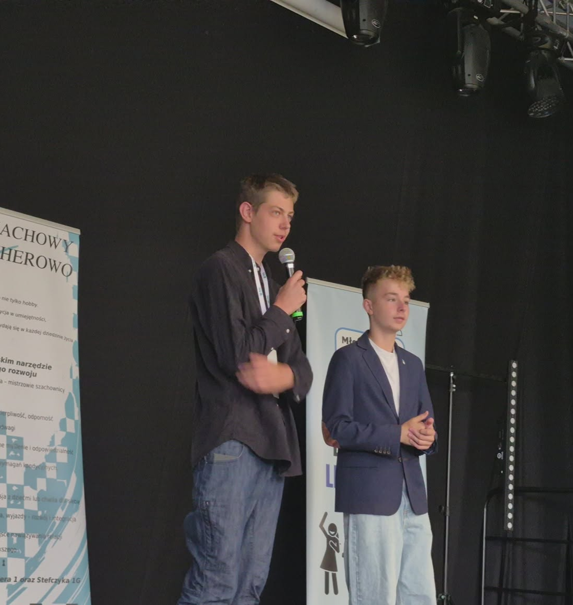
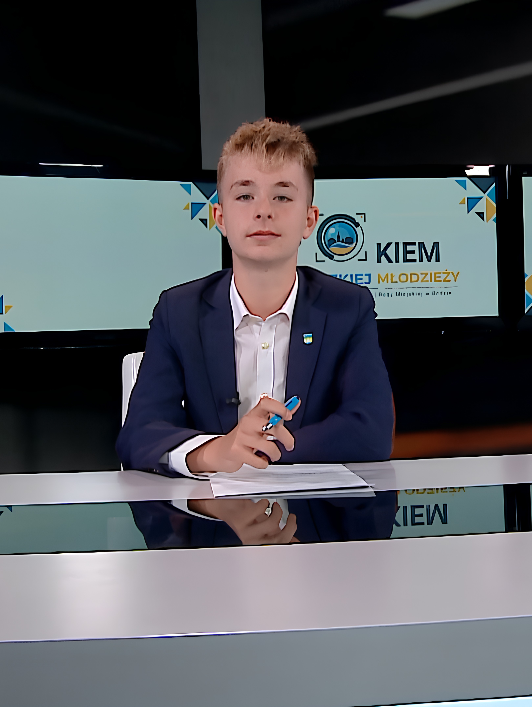
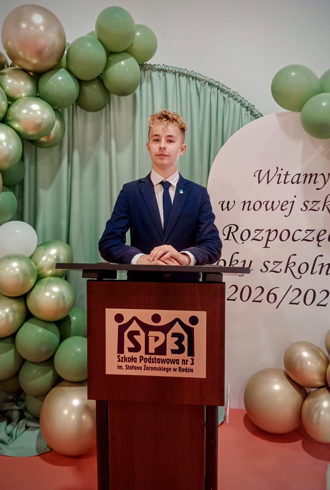
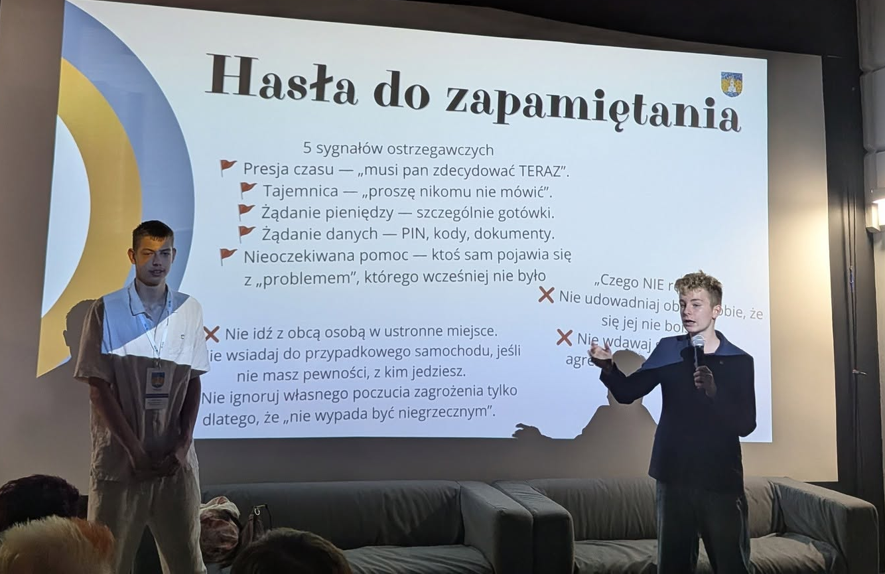
WYBORY DO MRM REDA
Program wyborczy do XII kadencji MRM Reda
14 postulatów dotyczących aktywności, przestrzeni, edukacji i realnego udziału młodzieży w życiu miasta.
Młodzieżowa skrzynka pomysłów
Więcej wydarzeń sportowych dla młodzieży
Turnieje e-sportowe
Turnieje planszówek
Młodzieżowe koncerty
Więcej stojaków na rowery
Warsztaty z pierwszej pomocy
Edukacja finansowa dla młodzieży
Debaty młodzieżowe
Więcej TikToków MRM 😉
Młodzieżowy newsletter
Budowa pumptracku
Remont skateparku
Więcej realnego wpływu młodzieży na sprawy miasta
Ulotki aktualne i archiwalne😊
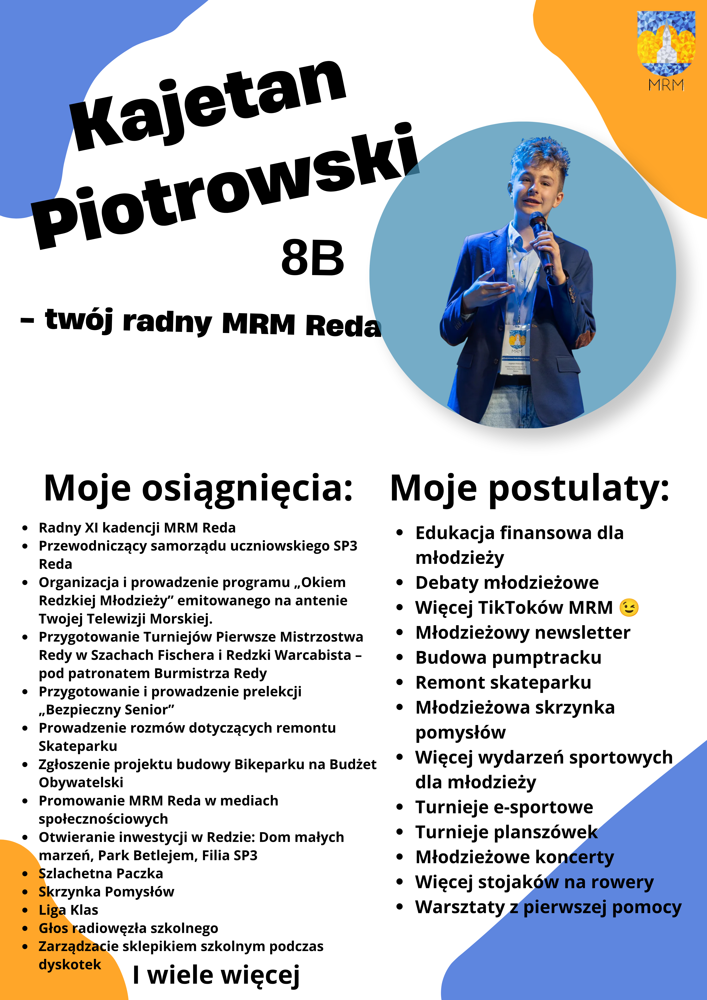
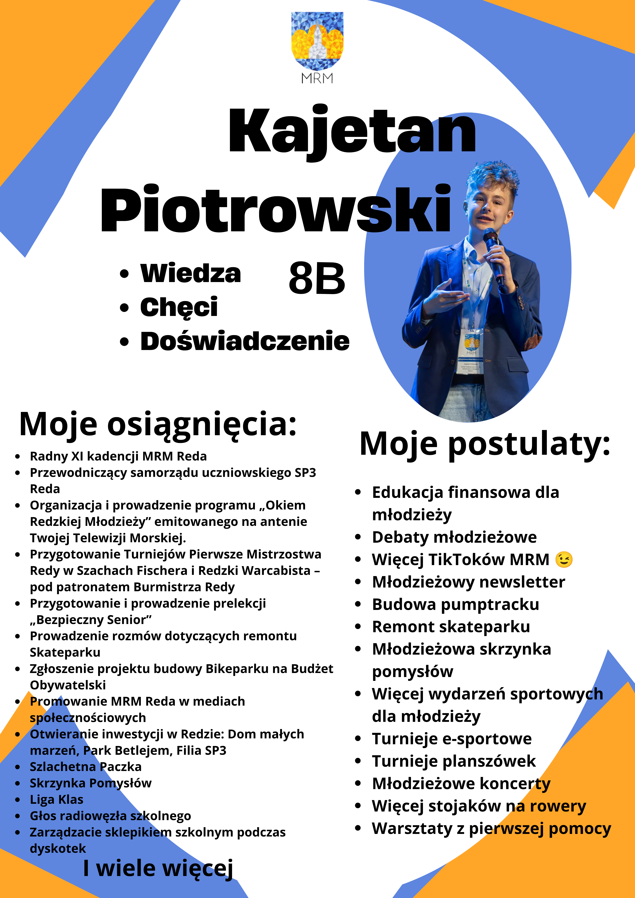
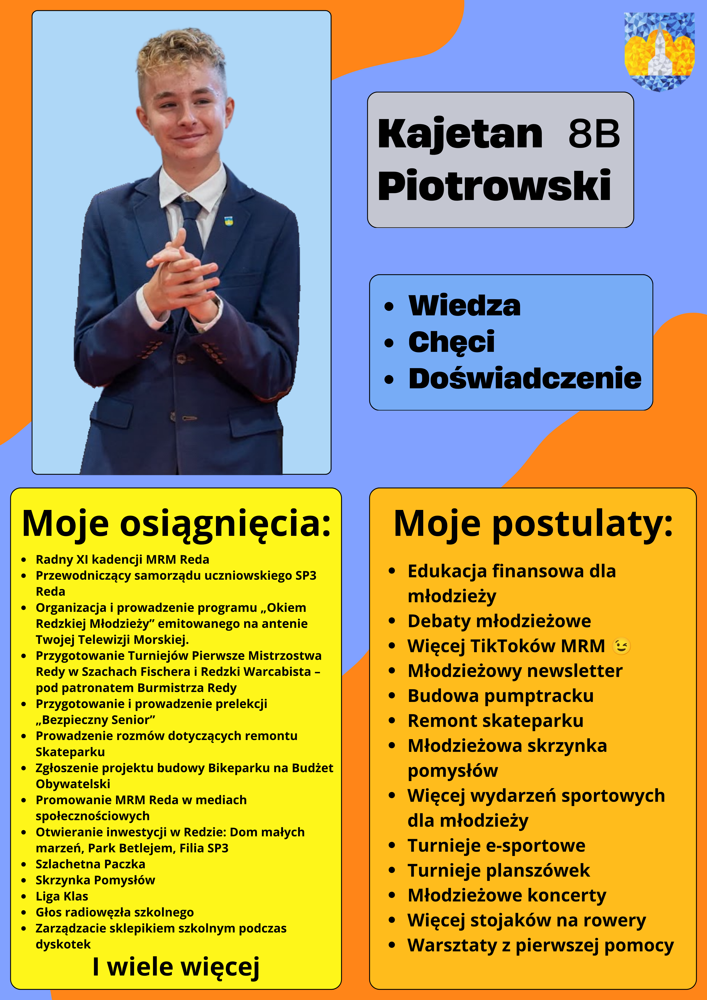
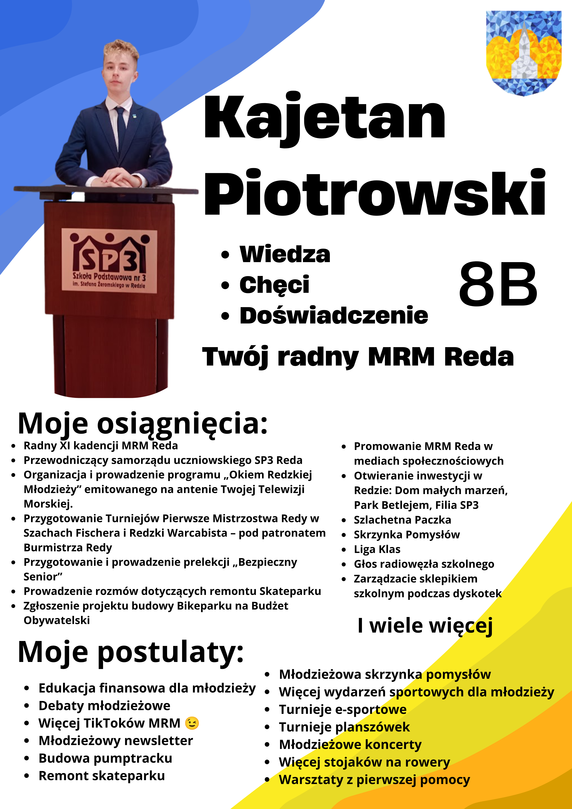
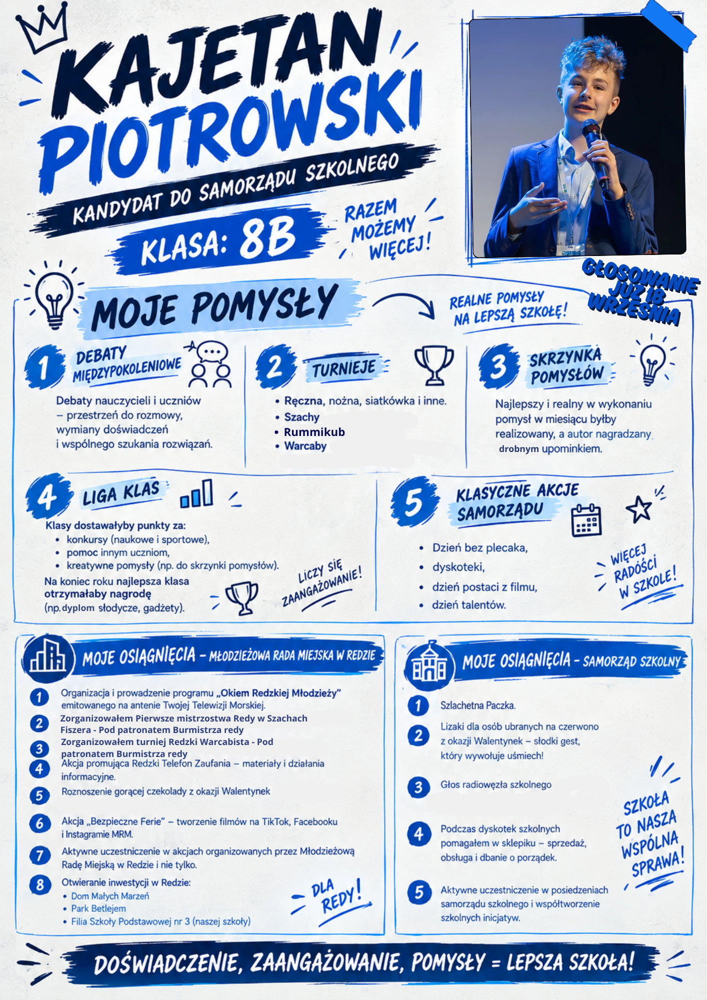
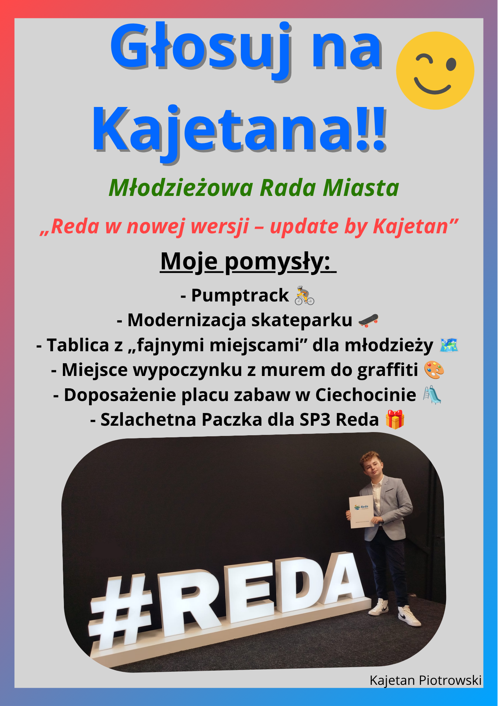
KONTAKT
Kajetan Piotrowski
Kontakt związany z działalnością samorządową, społeczną, szkolną i kampanią wyborczą.